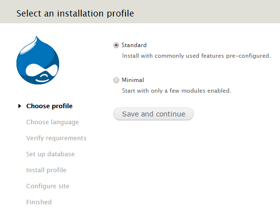
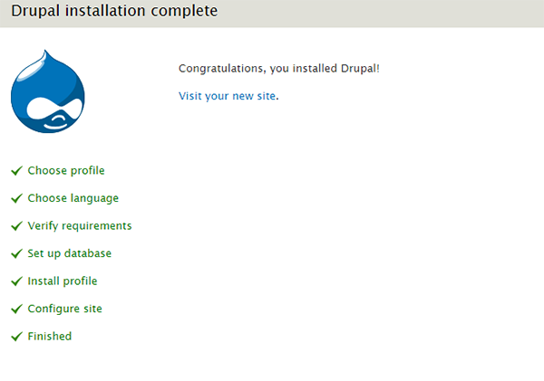

Install and configure Drupal on your LAMP server - CentOS, Fedora, Apache, LAMP, Drupal
Install and configure Drupal on your LAMP server - CentOS, Fedora
Drupal is one of the most popular and open-source dynamic CMS for your blogs and website. Drupal is a free software package that allows you to easily organize, manage and publish your content, with an endless variety of customization.
Before starting, you will need to install LAMP on your CentOS and Fedora server. For more details, see Build a LAMP stack (Linux, Apache, MySQL, PHP) - CentOS 6, Build a LAMP stack (Linux, Apache, MySQL, PHP) - CentOS 7 and Build a LAMP stack (Linux, Apache, MySQL, PHP) - Fedora.
Set up environment for Drupal
- Install the
php-gd, php-dom, php-mysql and php-mbstring which will required by Drupal in future.
sudo yum update
sudo yum install tar
sudo yum install php-gd php-dom php-mysql php-mbstring
- Restart the Apache webserver to change effect.
sudo service httpd restart
- Create a database for Drupal to store basic settings and user data.
mysql -uroot -ppassword
Here, you need to use mysql root password which you provided during mysql installation.
CREATE DATABASE drupal;
- Add a new user for Drupal database.
CREATE USER drupaluser@localhost IDENTIFIED BY 'drupalpassword';
- Grant all privileges to the Drupal user.
GRANT SELECT,INSERT,UPDATE,DELETE,CREATE,DROP,INDEX,ALTER,CREATE TEMPORARY TABLES,LOCK TABLES ON drupal.* TO drupaluser@localhost;
- Reload the MySQL database privileges to activate the new MySQL user:
FLUSH PRIVILEGES;
exit
Set up Drupal
- Download the Drupal stable version from the official site, using the following command:
cd /var/www/html
sudo wget http://ftp.drupal.org/files/projects/drupal-7.39.tar.gz
- Extract Drupal compressed file using the following command:
sudo tar zxvf drupal-7.39.tar.gz
- Rename Drupal extracted folder to drupal for easy access.
sudo mv drupal-7.39 drupal
- Change permission to 755 to the Drupal director.
sudo chmod -R 755 /var/www/html/drupal
sudo chown -R apache:apache /var/www/html/drupal
Install Drupal
- Open the browser and type FQDN or Public IP in browser to start installation for drupal for your blog.
http://public_ip/drupal
- Select an installation type as per your requirement.

- Choose language as per your need.

- In Database configuration, type the correct information of database. Under Advanced Options, give the Database host, Database port and Table prefix and then click on Save and continue.

- Configure your blog and website information in the Configuration site page. Type the appropriate information, and click Save and continue.

This process may take some time.
- On the Drupal installation complete page, click on Visit your new site to go to your Drupal website:

- You will see a welcome page for Drupal Blog. You can start blogging here.

Conclusion
In this article you learned to install and configure Drupal on your LAMP server with CentOS and Fedora.